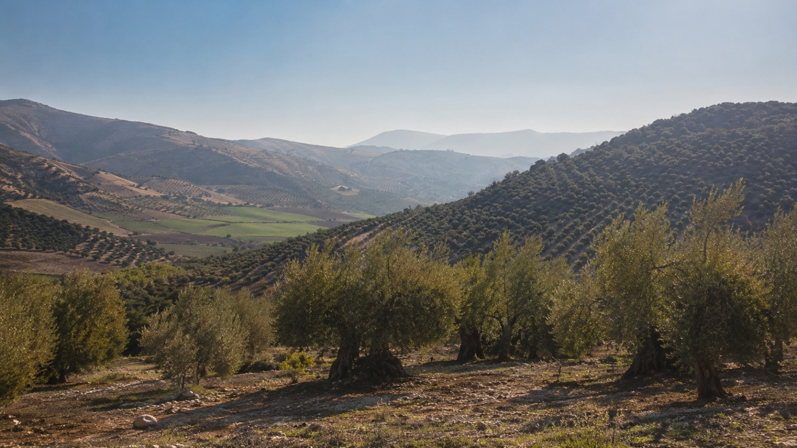

1963
Nace la cooperativa
Un grupo de familias olivareras de Montejícar decide unirse para transformar juntos su cosecha. Así nace nuestra cooperativa: una almazara cooperativa nacida del trabajo de sus socios, no de un proyecto empresarial externo.